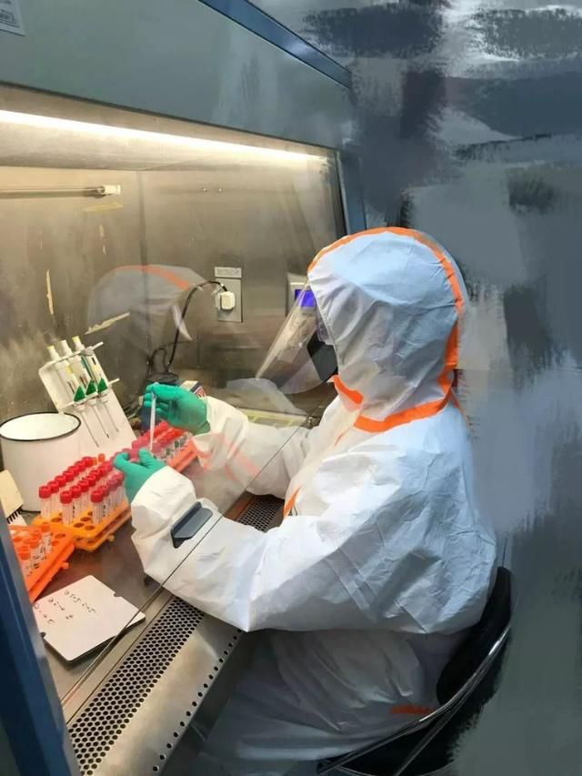

肺炎日记|2月2日：力不从心红会“让路”，双黄连惹质疑
原文链接 备份链接 【财新网】（记者 黄蕙昭 综合）疫情局势仍然严峻。截至2日16时，中国累计确诊病例14489例，死亡304例，疑似病例19544例。湖北地区继续保持高增速：目前，湖北省确诊病例9074例，其中黄冈市累计确诊1002 …

刘为勇是我的大学同学。如今他是华中科技大学同济医学院附属同济医院检验科一员，发生疫情以来，他一直在抗击新冠病毒的第一线。
他是新冠病毒的最早鉴定者之一。在 1 月 4 日，他就在大学群里提醒大家不要去菜市场买野味，因为基因测序结果出来了。他当时没有言明的是可能为新型冠状病毒。
我本来早就打算联系他了解情况，看到他在群里说了一句 “我话不能说太多” 而作罢。直到最近他接受了中国科学报采访。这篇《武汉 “硬核” 博士：我与新冠病毒打交道的日夜》的报道让同学群热闹多了些，大家纷纷点赞。于是想，该联系他了。
他实在太忙了。我下午 2 点多发微信约他，晚上 10 点 48 分才有回音。然后到凌晨 2：32，他回信说：刚到家洗完澡。
一天一百多样本

大年初三，他当天做了 100 多份样本的检测。
我能想象到他每天的工作场景。换工作鞋、七步洗手、穿戴连体防护服、护目镜、N95 口罩、三层防护手套，穿戴整齐差不多 20 分钟。检验工作是从拿到标本开始的，核酸提取、合成扩增、检验结果判定、信息录入、判断阳性率以及上传报告。
样本的处理在生物安全柜中进行，狭小的空间里需要操作人员要长时间保持固定姿势，吸管取样要求精细，每次取样、加样要精确到几微升。刘为勇说，这是检测中最耗体力的步骤。
每次检测样品处理（灭活、取样）需要 90 分钟，核酸扩增（PCR）需要两个半小时，这样加起来就要差不多 4 个小时。加上写报告和上传报告，差不多就是 5 个小时之多，这也正是防护服的使用时间。
在这 5 个小时里，他们不能吃饭，不能喝水，不能上厕所。更糟的是，整个人在狭小的空间里身着密闭的防护服，几个小时下来满身是汗。水汽凝结在护目镜上，还阻碍了视线。

图 | 同济医院检验科的同事们。（来源：同济医院检验科微信公众号）
他们检验科有 16 个人，人手还算够用，然而机器（核酸提取仪）不够用。于是他们分了两拨轮班倒，机器不停。
我问他，除了防护服，他们还有哪些措施保证个人安全的？
在样本到实验室之后，第一件事情就是把标本灭活，灭活方式是 56 摄氏度烤箱烤 1 个小时，这样标本就失去了活性。
所有操作都要在生物安全柜中进行，操作过程要轻柔避免飞溅。核酸提取是机器全自动提取，这也是尽量避免操作者的暴露风险。操作间都是单独使用，有防污染隔离区。
所有产生的污物必须高压灭菌后才能运出实验室。桌面、仪器、固定设施及地面至少每日采用消毒液擦拭。PCR 实验结束后紫外照射房间及相关设施以消除核酸污染，同时杀灭病毒。
一些步骤能减少手工操作的尽量减少。比如，自动核酸提取的时候，采用带病毒保存液的咽拭子或鼻咽拭子可避免开盖添加生理盐水的步骤。
他们还在自己的微信公众号发布了《我们的经验：新冠病毒检测常见问题处理》，阅读数达到了 7 万之多，也被多个专业账号转载。
目前，他们每上一天班就会休息一天，而采样人员则是上一周，休一周。采样人员的休息其实是被隔离在宾馆，防止造成家人感染。
目前他的工作其实没原来紧张了，更多实验操作的事情交给了更年轻的同事，他会做一些指导工作。
他们需要分辨疑似患者。其实试剂盒都有判断说明书，如果 PCR 扩增曲线不规则，只出来 1 个扩增点，即 1 个靶标，那么就都要发疑似报告。疑似病例他们会建议重新采样检测。
如果出现两个峰， PCR 扩增曲线很典型，那么就是阳性。阳性报告直接上报给武汉市卫健委。
他说，这几天样本检测量还在攀爬，他们科室的样本检测量最高纪录到了一天 900 份。
最早发现者之一
刘为勇所在科室是最早发现新冠病毒的团队之一。1 月 2 号拿到标本，4 日他就在群里提醒同学了。
两个标本来自其他医院，临床怀疑是 SARS 肺炎。彼时武汉的 8 个医生已经在网上上传了写有 SARS 病毒阳性的检测报告，刘为勇所在科室看到过这个报告后，就让中南医院合作伙伴进行了检测。因为合作伙伴只有 SARS 试剂盒，然后就又做了逆转录—聚合酶链反应（RT-PCR），发现是 SARS 阳性。
这时候需要确定是不是冠状病毒突变，他们就进行了测序。一代测序和二代测序同时进行。
刘为勇设计了一代测序里的 6 对聚合酶链式反应（PCR）引物，但只有 1 对引物成功了。5 对引物失败，正是因为他们选取的是 SARS 的模板。加上二代测序结果，他们得出结论，这是一个新发现病毒，和 SARS 病毒接近。
我好奇地问，你们怎么没有抢着发论文呢，这可是大好机会？
刘为勇说，是不是第一个得到这个病毒序列他们不能确定，但他们很好奇，SARS 病毒已经被消灭了怎么还会出现？于是第一个反应就是报告到中国疾控中心。
他们把序列信息也上报给了中国疾控中心，这得到了对方的点赞，称同济医院非常无私，非常有责任感。刘为勇说，一般那个序列是不会轻易给别人，而“我们是没有任何犹豫的”。
他们这个团队来自多家机构，还包括武汉大学病毒学国家重点实验室、中南医院、中山大学的科研人员。如今相关论文投给了国际期刊《新发病原体与感染》（_Emerging Microbes & Infections_）。
他们承担了传染病防治专项课题，要与中国疾控中心联防联控。

图 | 同济检验科 2019-nCoV 核酸检测报告模板。（来源：同济医院检验科）
新冠病毒疫情来了，他们并没有惊慌失措。在他们科室 16 名技术人员中有 5 名博士，此前已经有了比较完善的新突发病毒鉴定体系。刘为勇说，成熟的测序技术很重要，他们平时有这种工作储备，可以在病毒袭来时立马能够上战场。
刘为勇本人就做了很多病毒检测技术研发的工作。因为他们也会遇到某个病毒没有中国药监局认证的试剂盒的情况，而临床医生和患者的需求又很急迫，这时候他们就会做研发，创建方法，比如说要引物、探针、PCR 扩充条件，解决好灵敏度、特异性、敏感性的问题。在符合检测的标准要求之后，他们就会把这个项目推出去。
比如冠状病毒，在新冠病毒发生之前的 6 种可感染人的冠状病毒中，除了 SARS 和 MERS，其它 4 种冠状病毒的病毒方法学均已在 2017 年前后建好。因为 SARS 病毒和 MERS 病毒没有阳性标本，当时认为不会再复发，他们就没有创建其病毒学方法。
他们在病毒样本中筛到了 3 例冠状病毒 HCoV-229E 标本，只是感染该病毒的患者症状都很轻。
同学刘为勇

图 | 刘为勇在操作间。（来源：刘为勇）
4 年大学生涯，我和刘为勇不记得有接触。我们是华中师范大学生命科学学院的不同系，我是生物科学专业，他是生物技术专业。印象中他个子不高，戴眼镜，平时一副严肃的表情。
他是湖北孝感汉川人，毕业后进入武汉大学病毒学国家重点实验室攻读研究生，博士课题是《南昌与武汉地区手足口病分子流行病学调查研究》。之后进入同济医院检验科做博士后工作，随后留下。这些信息是我这几天天搜索才知道的。
不过我们很早就有意见面聊一聊，因为他在毕业后曾与我有过一点接触。那是 2013 年基因农业网发起《就 “财经郎眼” 和“解码财商”造谣转基因事件致国家广电总局的公开信》时，刘为勇联系到我，说希望联署签名。当时他还是同济医院的博士后。
之后是 2018 年，他来京有意见面聊聊，结果不巧我不在京。然后 2019 年我到武汉约他来同学聚会，结果他要替患流感的同事值班而未能如愿。
他的夫人也是医务工作者，这几天正在门诊岗位值班，那岗位比他的检验科还要高危。如今他一儿一女，儿子小学二年级，女儿还不满两岁，正是家庭压力大的时候。
我问他，武汉 “封城” 有什么影响？他却不太能回答，大概太专注业务了。只说，“封城”前一天去麦德龙扫了 2000 多元的储备，彼时方便面的货架已经空了。他说，最近又快该扫货了。
刘为勇在我们的同学群里跟他现实中一样低调、沉默，只有在最近疫情出现才冒了几句话，以及在被报道之后成为大家关注的焦点。
其实群里每天都会刷屏上百条信息，毕竟 130 多人的群里多数在湖北，主要集中在武汉。
有的同学会转来各种消息，也有同学热衷解疑答惑。比如有同学说，他的同事妈妈大年三十晚上患肺炎去世，医院说是新冠肺炎，现在死了医院却不承认，这就会导致治疗成为全自费，要补交七八万元；也有同学转发幼儿园老师的求助帖子，说亲属确诊新冠病毒肺炎却无法入院；也有同学说，村里打电话问从武汉哪里回乡的，回答是汉口火车站后，吓得旁边邻居赶紧躲避。
我问了几个同学，武昌的同学还好，物价不算太高。汉口的同学受影响最大，因为武汉华南海鲜批发市场就在汉口火车站附近。那里的人们会受到更多的歧视对待。
武汉同学最担心的不是 “封城” 带来的生活不便，而是家人要是有感染能不能顺利入院。
刘为勇说，据他了解，有两个认识的同事也被感染，不过好消息是已经接近康复。他说，“如果我们科任何人因为工作感染了，我们肯定是尽全力给他医护保障，让他消除后顾之忧。”
至少在和我的通话中，刘为勇没有某些医院那种 “捐躯赴国难” 的壮烈言语，也没有什么忧心的表达，都是平平淡淡的日常，一如他们平时的工作状态。
-End-
DeepTech关于武汉肺炎的系列报道（上下滑动可见全部报道）：
新冠病毒疫苗上市最短6个月，最长10年｜独家采访美国生物医疗巨头Moderna
新冠病毒阴谋论疑云：“病毒非自然形成”，印度学者研究被哈佛大牛批“不靠谱”
双黄连一夜全网脱销，美国首例病情缓解则靠这个药！中国有望能用上
世卫组织正式将武汉肺炎定性为“国际关注的突发公共卫生事件”！
病毒“人传人”去年12月中旬或已发生？武汉肺炎传播性、致死率暂低于SARS，两大医学顶刊发布相关患者数据
抗击武汉肺炎最佳药物现身？《科学》杂志：一种在研抗埃博拉药物最有希望
无症状病例已现！到底是谁把新冠病毒带到了武汉？科学家加速病毒溯源
疫苗研发能否跑赢武汉肺炎？mRNA技术“高调登场”，全球科研力量投入新型疫苗研发
德国教授真有武汉肺炎“神药”？“最强抑制剂”从未进行人体测试！全球学者投入武汉肺炎治疗技术战
武汉封城能否防止超级传播者？世卫：定性“突发公共卫生事件”仍需更多信息
武汉肺炎首场国家新闻发布会：病毒存在变异可能，疫情存在进一步扩散风险
武汉实施进出管控！迄今肺炎疫情最权威声音，钟南山表示须警惕春运超级传播者

原文链接 备份链接 【财新网】（记者 黄蕙昭 综合）疫情局势仍然严峻。截至2日16时，中国累计确诊病例14489例，死亡304例，疑似病例19544例。湖北地区继续保持高增速：目前，湖北省确诊病例9074例，其中黄冈市累计确诊1002 …
原文链接 备份链接 共27例病例，大多是武汉华南海鲜城经营户。7例病情危重，其余病情可控，有2例病情好转拟近期出院。 不明原因肺炎，是2003年SARS事件后，对SARS病例和人禽流感病例及其它传染性呼吸道疾病监测中用的概念。 …
原文链接 备份链接 【财新网】（记者 黄蕙昭 综合）新型冠状病毒疫情不确定性增加：重症病例上升，聚集性感染突现，疫情防控难度和压力不减。 2月4日，全国新型冠状病毒新增确诊病例3887例，新增死亡65例，新增疑似病例3971例，较2 …
原文链接 备份链接 【财新网】（记者 杨睿 冯禹丁 赵今朝）“阴谋论者不相信科学。我希望国家专业部门来调查，给我们一个清白。”中国科学院武汉病毒研究所研究员石正丽2月4日回复财新记者称，“我自己的话没有说服力，我不能控制别人的思想和言 …
原文链接 备份链接 我住在汉口，是这次疫情的重灾区。那个被查出疫情源头的华南海鲜市场，就在火车站对面，离我家大概20公里。我希望疫情早日结束，对我们国家的经济影响小一些，所有人都能够平安和健康。 口述 | 小 玲 整理 | 沈 林 我叫小 …